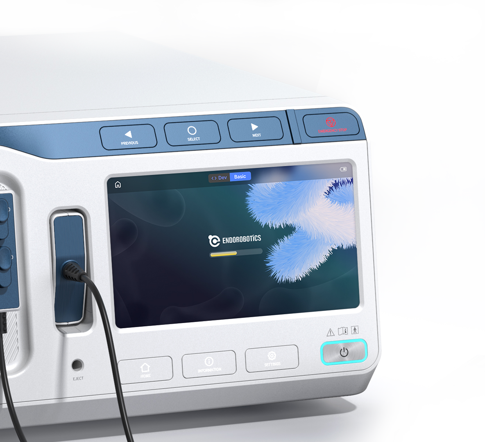
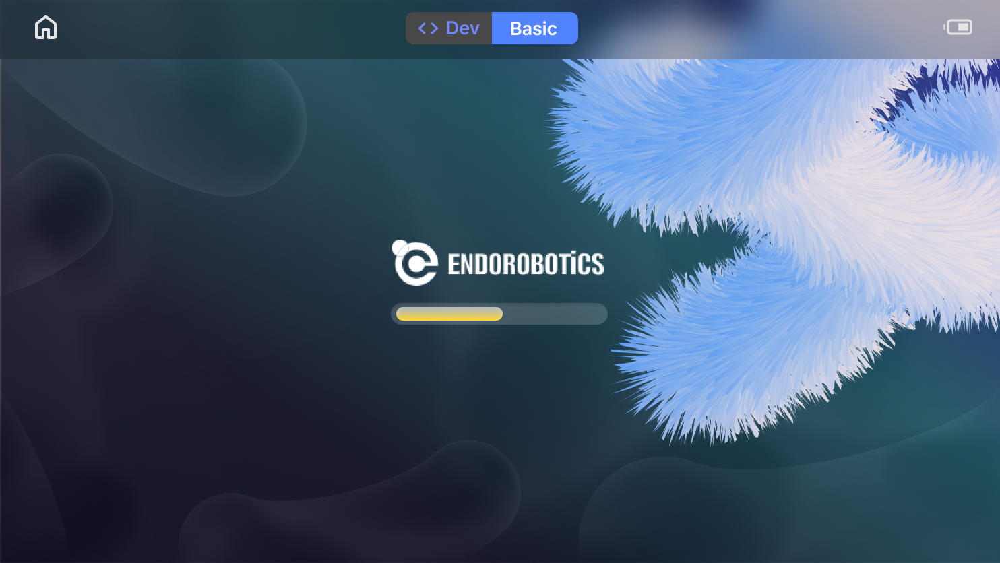
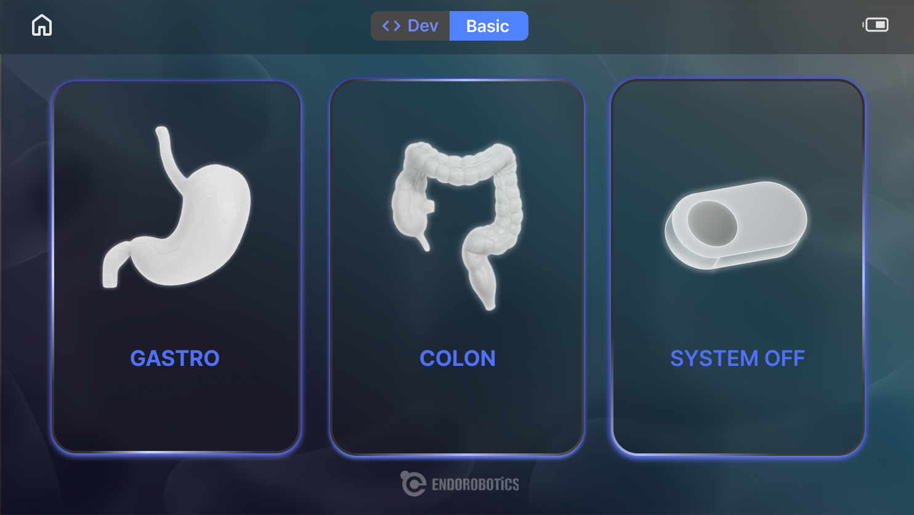
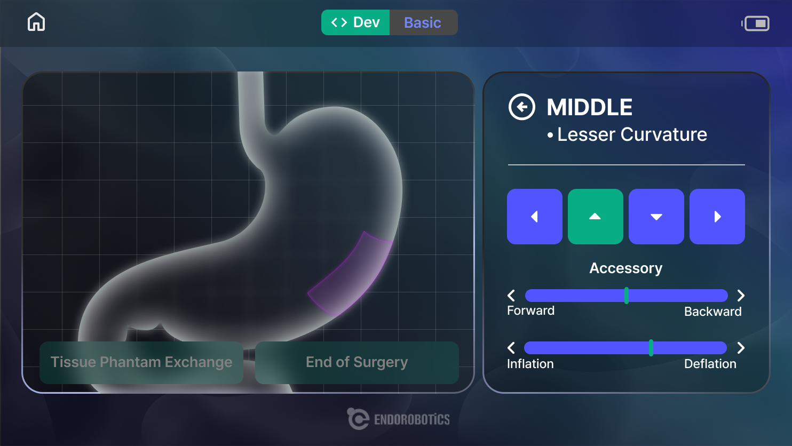

PRODUCT · MEDICAL DEVICE
ENDO-
ROBOTICS
내시경 수술 장비 HMI
의료기기 제품 UX 제안
Category
UX/UI DesignProduct UX
Year
2025
Tools
FigmaAdobe CC
Contribution
UX/UI 100%제품 디자인 제외

Overview
수술 중에도 화면에 오래 머물지 않고
장비를 다룰 수 있도록 설계했습니다.
내시경 수술 로봇 장비에 들어가는 HMI 제안 프로젝트입니다.
검사 부위 선택부터 내시경 위치 확인, 세부 조작까지의 흐름을 최소한의 단계로 정리하고,
하드웨어 버튼과 맞물리는 화면으로 설계했습니다.
메뉴를 찾는 부담
수술 중에는 화면을 오래 보며 메뉴를 찾기 어려움
위치 파악
수치와 텍스트만으로는 내시경의 현재 위치를 파악하기 어려움
조작 불일치
물리 버튼의 순서와 화면 흐름이 맞지 않으면 오조작이 생김
My Role
제품 UX 기획 · HMI 화면 구조 설계 · 하드웨어 버튼 연동 흐름 · GUI·아이콘·의료 시각화
Final UI
하드웨어 버튼과 맞물리는
HMI 화면을 설계했습니다.
의료진이 화면과 장비 사이를 오가는 시간을 줄이도록, 화면의 선택 흐름을 물리 버튼의 조작 순서와 일치시켰습니다.

Intro
장비 상태와 시작 동작을 한눈에 확인하는 첫 화면

Menu
- 문제
- 메뉴를 찾는 부담 · 수술 중 메뉴를 찾기 어려움
- 해결
- 위·대장·종료 3개의 큰 카드로 단순화

Control
- 문제
- 위치 파악 · 수치·텍스트로는 위치를 알기 어려움
- 해결
- 3D 장기 위에 현재 위치와 부위명 표시
- 문제
- 조작 불일치 · 버튼 순서와 화면 흐름이 다름
- 해결
- 이전·선택·다음 버튼 순서에 맞춘 화면 구성
Reflection
화면과 장비를
하나의 조작 흐름으로 연결했습니다.
수술 환경에서는 화면을 익히는 데 시간을 쓰기 어렵다는 점을 기준으로, 선택지를 줄이고 위치 정보를 시각적으로 보여주는 데 집중했습니다.
화면 설계와 하드웨어 버튼 흐름을 함께 고려해야 장비 UI가 완성된다는 점을 확인한 프로젝트입니다.